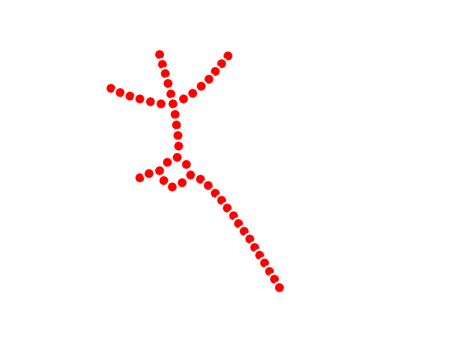

Note
Click here to download the full example code
3D Horse Data¶
This example generates a Mapper built from a point-cloud sampled from a 3D model of a horse.
Visualization of the horse data
Out:
KeplerMapper(verbose=2)
..Composing projection pipeline of length 1:
Projections: sum
Distance matrices: False
Scalers: MinMaxScaler(copy=True, feature_range=(0, 1))
..Projecting on data shaped (8431, 3)
..Projecting data using: sum
..Scaling with: MinMaxScaler(copy=True, feature_range=(0, 1))
Mapping on data shaped (8431, 3) using lens shaped (8431, 1)
Minimal points in hypercube before clustering: 5
Creating 30 hypercubes.
> Found 1 clusters in hypercube 0.
> Found 2 clusters in hypercube 1.
> Found 3 clusters in hypercube 2.
> Found 3 clusters in hypercube 3.
> Found 3 clusters in hypercube 4.
> Found 3 clusters in hypercube 5.
> Found 3 clusters in hypercube 6.
> Found 1 clusters in hypercube 7.
> Found 2 clusters in hypercube 8.
> Found 2 clusters in hypercube 9.
> Found 2 clusters in hypercube 10.
> Found 3 clusters in hypercube 11.
> Found 2 clusters in hypercube 12.
> Found 2 clusters in hypercube 13.
> Found 1 clusters in hypercube 14.
> Found 1 clusters in hypercube 15.
> Found 1 clusters in hypercube 16.
> Found 1 clusters in hypercube 17.
> Found 1 clusters in hypercube 18.
> Found 1 clusters in hypercube 19.
> Found 1 clusters in hypercube 20.
> Found 1 clusters in hypercube 21.
> Found 1 clusters in hypercube 22.
> Found 1 clusters in hypercube 23.
> Found 1 clusters in hypercube 24.
> Found 1 clusters in hypercube 25.
> Found 1 clusters in hypercube 26.
> Found 1 clusters in hypercube 27.
> Found 1 clusters in hypercube 28.
> Found 1 clusters in hypercube 29.
Created 48 edges and 48 nodes in 0:00:00.116851.
Wrote visualization to: output/horse.html
import matplotlib.pyplot as plt
import numpy as np
import sklearn
import kmapper as km
data = np.genfromtxt('data/horse-reference.csv', delimiter=',')
mapper = km.KeplerMapper(verbose=2)
lens = mapper.fit_transform(data)
graph = mapper.map(lens,
data,
clusterer=sklearn.cluster.DBSCAN(eps=0.1, min_samples=5),
cover=km.Cover(30, 0.2))
mapper.visualize(graph,
path_html="output/horse.html",
custom_tooltips=np.arange(len(lens)))
km.drawing.draw_matplotlib(graph)
plt.show()
Total running time of the script: ( 0 minutes 0.513 seconds)